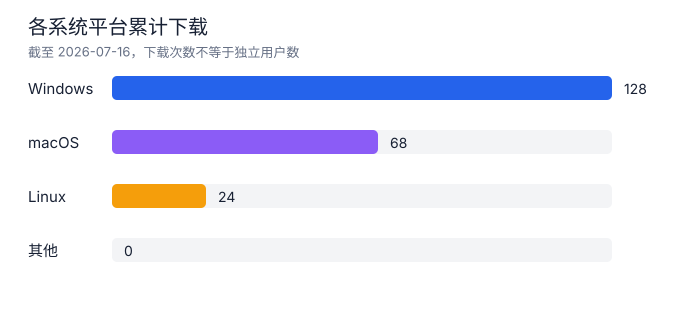
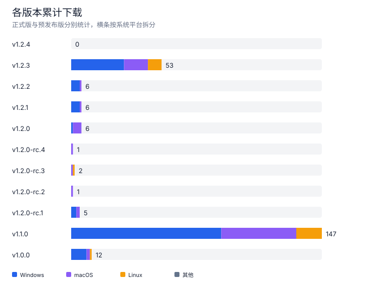
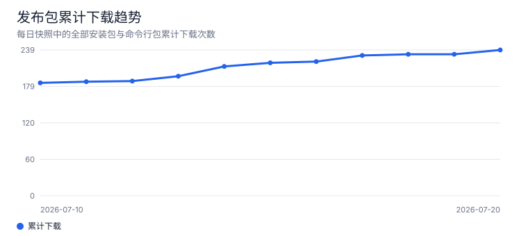
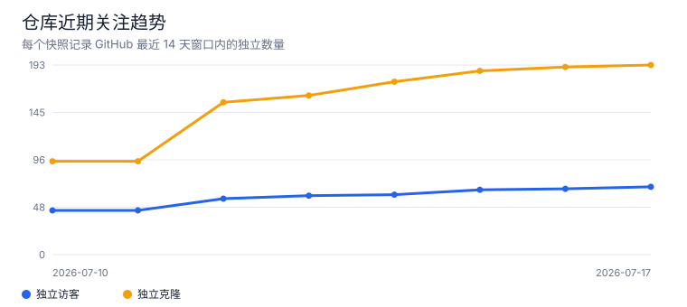
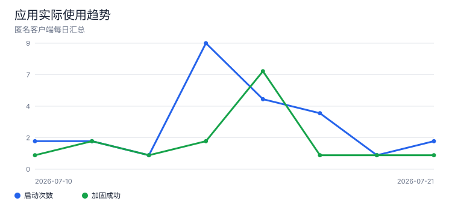
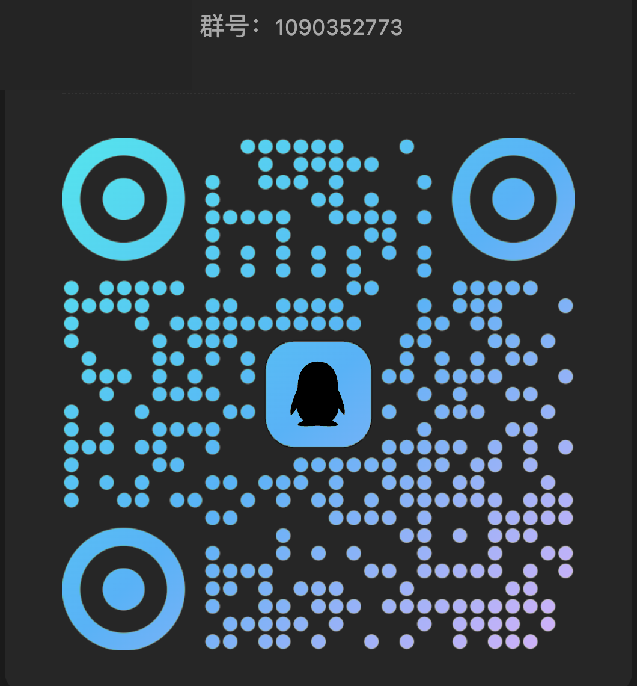

当前指标近实时 · 趋势每日更新
Mocika Shield 关注与使用趋势
Mocika Shield 是一个 Android APK 加固工具，提供 DEX 加密、壳保护和运行时反调试能力。这里通过 GitHub 公开指标和用户允许上报的匿名每日汇总，观察项目关注与实际使用趋势；展示的是聚合趋势，不是精确的独立用户数。
今日匿名使用数据仍在累计，完整日数据于次日进入趋势。
趋势与分布
按平台、版本和时间观察下载变化





版本下载明细
正式版与预发布版分开统计
| 版本 | 类型 | Windows | macOS | Linux | 合计 |
|---|---|---|---|---|---|
v1.2.7-rc.5 | 预发布版 | 0 | 1 | 0 | 1 |
v1.2.7-rc.4 | 预发布版 | 0 | 0 | 0 | 0 |
v1.2.7-rc.3 | 预发布版 | 0 | 0 | 0 | 0 |
v1.2.7-rc.2 | 预发布版 | 2 | 0 | 0 | 2 |
v1.2.7-rc.1 | 预发布版 | 2 | 0 | 0 | 2 |
v1.2.6 | 正式版 | 36 | 10 | 6 | 52 |
v1.2.5 | 正式版 | 8 | 7 | 0 | 15 |
v1.2.4 | 正式版 | 27 | 6 | 1 | 34 |
v1.2.3 | 正式版 | 31 | 14 | 8 | 53 |
v1.2.2 | 正式版 | 5 | 1 | 0 | 6 |
v1.2.1 | 正式版 | 5 | 1 | 0 | 6 |
v1.2.0 | 正式版 | 1 | 5 | 0 | 6 |
v1.2.0-rc.4 | 预发布版 | 0 | 1 | 0 | 1 |
v1.2.0-rc.3 | 预发布版 | 1 | 1 | 1 | 3 |
v1.2.0-rc.2 | 预发布版 | 0 | 1 | 0 | 1 |
v1.2.0-rc.1 | 预发布版 | 3 | 2 | 0 | 5 |
v1.1.0 | 正式版 | 88 | 44 | 15 | 147 |
v1.0.0 | 正式版 | 9 | 2 | 1 | 12 |
查看具体发布产物
| 版本 | 产物 | 平台 | 下载 |
|---|---|---|---|
v1.2.7-rc.5 | MocikaShield_1.2.7-rc.5_linux_amd64.AppImage | Linux | 0 |
v1.2.7-rc.5 | MocikaShield_1.2.7-rc.5_linux_amd64.deb | Linux | 0 |
v1.2.7-rc.5 | MocikaShield_1.2.7-rc.5_macos_universal.dmg | macOS | 1 |
v1.2.7-rc.5 | MocikaShield_1.2.7-rc.5_windows_x64_setup.exe | Windows | 0 |
v1.2.7-rc.4 | MocikaShield_1.2.7-rc.4_linux_amd64.AppImage | Linux | 0 |
v1.2.7-rc.4 | MocikaShield_1.2.7-rc.4_linux_amd64.deb | Linux | 0 |
v1.2.7-rc.4 | MocikaShield_1.2.7-rc.4_macos_universal.dmg | macOS | 0 |
v1.2.7-rc.4 | MocikaShield_1.2.7-rc.4_windows_x64_setup.exe | Windows | 0 |
v1.2.7-rc.3 | MocikaShield_1.2.7-rc.3_linux_amd64.AppImage | Linux | 0 |
v1.2.7-rc.3 | MocikaShield_1.2.7-rc.3_linux_amd64.deb | Linux | 0 |
v1.2.7-rc.3 | MocikaShield_1.2.7-rc.3_macos_universal.dmg | macOS | 0 |
v1.2.7-rc.3 | MocikaShield_1.2.7-rc.3_windows_x64_setup.exe | Windows | 0 |
v1.2.7-rc.2 | MocikaShield_1.2.7-rc.2_linux_amd64.AppImage | Linux | 0 |
v1.2.7-rc.2 | MocikaShield_1.2.7-rc.2_linux_amd64.deb | Linux | 0 |
v1.2.7-rc.2 | MocikaShield_1.2.7-rc.2_macos_universal.dmg | macOS | 0 |
v1.2.7-rc.2 | MocikaShield_1.2.7-rc.2_windows_x64_setup.exe | Windows | 2 |
v1.2.7-rc.1 | MocikaShield_1.2.7-rc.1_linux_amd64.AppImage | Linux | 0 |
v1.2.7-rc.1 | MocikaShield_1.2.7-rc.1_linux_amd64.deb | Linux | 0 |
v1.2.7-rc.1 | MocikaShield_1.2.7-rc.1_macos_universal.dmg | macOS | 0 |
v1.2.7-rc.1 | MocikaShield_1.2.7-rc.1_windows_x64_setup.exe | Windows | 2 |
v1.2.6 | MocikaShield_1.2.6_linux_amd64.AppImage | Linux | 5 |
v1.2.6 | MocikaShield_1.2.6_linux_amd64.deb | Linux | 1 |
v1.2.6 | MocikaShield_1.2.6_macos_universal.dmg | macOS | 10 |
v1.2.6 | MocikaShield_1.2.6_windows_x64_setup.exe | Windows | 36 |
v1.2.5 | MocikaShield_1.2.5_linux_amd64.AppImage | Linux | 0 |
v1.2.5 | MocikaShield_1.2.5_linux_amd64.deb | Linux | 0 |
v1.2.5 | MocikaShield_1.2.5_macos_universal.dmg | macOS | 7 |
v1.2.5 | MocikaShield_1.2.5_windows_x64_setup.exe | Windows | 8 |
v1.2.4 | MocikaShield_1.2.4_linux_amd64.AppImage | Linux | 0 |
v1.2.4 | MocikaShield_1.2.4_linux_amd64.deb | Linux | 1 |
v1.2.4 | MocikaShield_1.2.4_macos_universal.dmg | macOS | 6 |
v1.2.4 | MocikaShield_1.2.4_windows_x64_setup.exe | Windows | 27 |
v1.2.3 | MocikaShield_1.2.3_linux_amd64.AppImage | Linux | 1 |
v1.2.3 | MocikaShield_1.2.3_linux_amd64.deb | Linux | 7 |
v1.2.3 | MocikaShield_1.2.3_macos_universal.dmg | macOS | 14 |
v1.2.3 | MocikaShield_1.2.3_windows_x64_setup.exe | Windows | 31 |
v1.2.2 | MocikaShield_1.2.2_linux_amd64.AppImage | Linux | 0 |
v1.2.2 | MocikaShield_1.2.2_linux_amd64.deb | Linux | 0 |
v1.2.2 | MocikaShield_1.2.2_macos_universal.dmg | macOS | 1 |
v1.2.2 | MocikaShield_1.2.2_windows_x64_setup.exe | Windows | 5 |
v1.2.1 | MocikaShield_1.2.1_linux_amd64.AppImage | Linux | 0 |
v1.2.1 | MocikaShield_1.2.1_linux_amd64.deb | Linux | 0 |
v1.2.1 | MocikaShield_1.2.1_macos_universal.dmg | macOS | 1 |
v1.2.1 | MocikaShield_1.2.1_windows_x64_setup.exe | Windows | 5 |
v1.2.0 | MocikaShield_1.2.0_linux_amd64.AppImage | Linux | 0 |
v1.2.0 | MocikaShield_1.2.0_linux_amd64.deb | Linux | 0 |
v1.2.0 | MocikaShield_1.2.0_macos_universal.dmg | macOS | 5 |
v1.2.0 | MocikaShield_1.2.0_windows_x64_setup.exe | Windows | 1 |
v1.2.0-rc.4 | MocikaShield_1.2.0-rc.4_linux_amd64.AppImage | Linux | 0 |
v1.2.0-rc.4 | MocikaShield_1.2.0-rc.4_linux_amd64.deb | Linux | 0 |
v1.2.0-rc.4 | MocikaShield_1.2.0-rc.4_macos_universal.dmg | macOS | 1 |
v1.2.0-rc.4 | MocikaShield_1.2.0-rc.4_windows_x64_setup.exe | Windows | 0 |
v1.2.0-rc.3 | MocikaShield_1.2.0-rc.3_linux_amd64.AppImage | Linux | 1 |
v1.2.0-rc.3 | MocikaShield_1.2.0-rc.3_linux_amd64.deb | Linux | 0 |
v1.2.0-rc.3 | MocikaShield_1.2.0-rc.3_macos_universal.dmg | macOS | 1 |
v1.2.0-rc.3 | MocikaShield_1.2.0-rc.3_windows_x64_setup.exe | Windows | 0 |
v1.2.0-rc.3 | mocika-shield-cli-1.2.0-rc.3-linux-x86_64.tar.gz | Linux | 0 |
v1.2.0-rc.3 | mocika-shield-cli-1.2.0-rc.3-macos-universal.tar.gz | macOS | 0 |
v1.2.0-rc.3 | mocika-shield-cli-1.2.0-rc.3-windows-x86_64.zip | Windows | 1 |
v1.2.0-rc.2 | MocikaShield_1.2.0-rc.2_linux_amd64.AppImage | Linux | 0 |
v1.2.0-rc.2 | MocikaShield_1.2.0-rc.2_linux_amd64.deb | Linux | 0 |
v1.2.0-rc.2 | MocikaShield_1.2.0-rc.2_macos_universal.dmg | macOS | 0 |
v1.2.0-rc.2 | MocikaShield_1.2.0-rc.2_windows_x64_setup.exe | Windows | 0 |
v1.2.0-rc.2 | mocika-shield-cli-1.2.0-rc.2-linux-x86_64.tar.gz | Linux | 0 |
v1.2.0-rc.2 | mocika-shield-cli-1.2.0-rc.2-macos-universal.tar.gz | macOS | 1 |
v1.2.0-rc.2 | mocika-shield-cli-1.2.0-rc.2-windows-x86_64.zip | Windows | 0 |
v1.2.0-rc.1 | MocikaShield_1.2.0-rc.1_linux_amd64.AppImage | Linux | 0 |
v1.2.0-rc.1 | MocikaShield_1.2.0-rc.1_linux_amd64.deb | Linux | 0 |
v1.2.0-rc.1 | MocikaShield_1.2.0-rc.1_macos_universal.dmg | macOS | 2 |
v1.2.0-rc.1 | MocikaShield_1.2.0-rc.1_windows_x64_setup.exe | Windows | 0 |
v1.2.0-rc.1 | mocika-shield-cli-1.2.0-rc.1-linux-x86_64.tar.gz | Linux | 0 |
v1.2.0-rc.1 | mocika-shield-cli-1.2.0-rc.1-macos-universal.tar.gz | macOS | 0 |
v1.2.0-rc.1 | mocika-shield-cli-1.2.0-rc.1-windows-x86_64.zip | Windows | 3 |
v1.1.0 | MocikaShield_1.1.0_linux_amd64.AppImage | Linux | 5 |
v1.1.0 | MocikaShield_1.1.0_linux_amd64.deb | Linux | 5 |
v1.1.0 | MocikaShield_1.1.0_linux_gnome_amd64.AppImage | Linux | 3 |
v1.1.0 | MocikaShield_1.1.0_linux_gnome_amd64.deb | Linux | 2 |
v1.1.0 | MocikaShield_1.1.0_macos_arm64.dmg | macOS | 13 |
v1.1.0 | MocikaShield_1.1.0_macos_swift_arm64.dmg | macOS | 18 |
v1.1.0 | MocikaShield_1.1.0_macos_swift_universal.dmg | macOS | 6 |
v1.1.0 | MocikaShield_1.1.0_macos_universal.dmg | macOS | 7 |
v1.1.0 | MocikaShield_1.1.0_windows_x64_setup.exe | Windows | 88 |
v1.0.0 | MocikaShield_1.0.0_linux_amd64.AppImage | Linux | 0 |
v1.0.0 | MocikaShield_1.0.0_linux_amd64.deb | Linux | 1 |
v1.0.0 | MocikaShield_1.0.0_macos_aarch64.dmg | macOS | 1 |
v1.0.0 | MocikaShield_1.0.0_macos_universal.dmg | macOS | 1 |
v1.0.0 | MocikaShield_1.0.0_windows_x64_setup.exe | Windows | 9 |
下载次数包含重复下载和不同格式下载，不等于独立用户数。访客和克隆在 GitHub 权限不可用时显示为“—”，不会被当作零。
